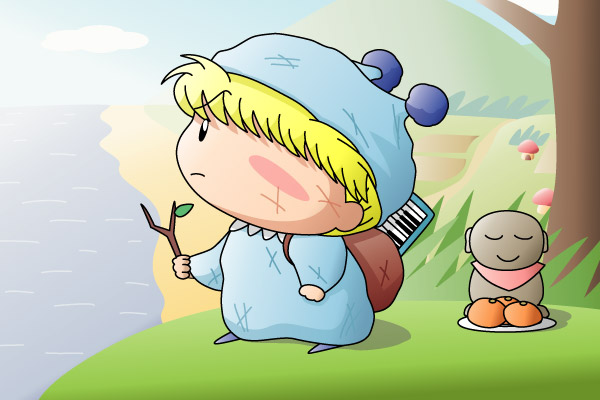

ミルモ(2)の絵に続いて、またまた『砂の器』バージョンのミルモです。久々に熱くさせられたドラマゆえ、ここ最近の私の中では、「ミルモ」と「砂の器」のミックス状態になっています。
絵の方は、ミルモ(2)のピアニカミルモの過去シーンになります。舞台は昭和5x年、島根県の亀嵩から九州へと一人旅を続ける幼き頃のミルモ。幼い少年にとっては重すぎる宿命を背負いながら…（クサ～）。あ、お地蔵様の前にあるみかんは、この後ミルモの胃袋におさまります(^◇^;)。
とか言いながらも、景色が妖精界ですね。やはり妖精には妖精界のポップな景色がなじむのです。幼少の頃のミルモということで、身長をムルモくらいの高さにしたり、少しあどけない表情にしてみたのですが、あまり変わらなかったなぁ。
(2004/4/16)